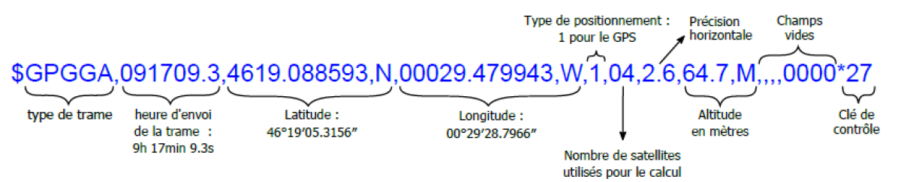
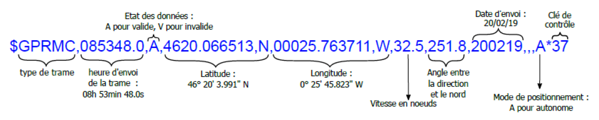
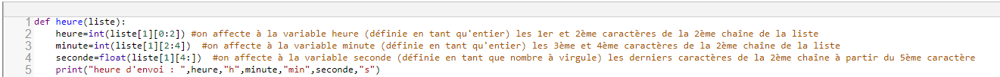

Le protocole NMEA
Les récepteurs GPS fournissent la localisation sous une forme normalisée facilement décodable. Le protocole NMEA 0183 est une norme applicable dans les communications en marine définie et contrôlée par la National Marine Electronics Association (NMEA), association américaine de fabricants d'appareils électroniques maritimes.
Dans ce qui suit, le Standard NMEA est défini simplement et uniquement comme étant le protocole de transmission des données entre les instruments et équipements électroniques liés au GPS.
Les informations qui circulent, d'un appareil vers un autre, doivent être structurées en phrase (sentence en anglais) ou trame dont le contenu est codifié.
Une trame NMEA est donc une suite de caractères contenant des informations de géolocalisation comme : la latitude, la longitude, l'altitude, le nombre de satellites employés, l'heure...
Une trame est constituée de champs. Les champs sont séparés entre eux par des virgules. Un champ peut être vide mais la présence de la virgule est obligatoire.
Une trame commence toujours par le caractère $ ;
Les deux lettres suivantes (champ "type de trame") identifient l'origine du signal : GP (pour le système GPS), GA (pour le système Galileo), . . .
Les 3 lettres qui terminent ce champ permettent d'identifier la trame : il existe plus d'une trentaine de trames. Nous nous limiterons à deux trames courantes : la trame GGA (Donnée de positionnement global du système) qui fait partie de celles qui sont utilisées pour connaître la position courante du récepteur GPS et la trame RMC (Information minimale recommandée).
Les informations contenues dans une trame varient selon le type de trame mais celles-ci se terminent généralement par une clé de contrôle (ou « checksum ») : c'est un nombre ajouté au message qui permet au système de vérifier que le message reçu est conforme à celui envoyé.
Trame GGA :

Trame RMC :

Format de la latitude et de la longitude
La latitude est au format DDMM.MMMM en dix millième de minutes (D = degré ; M = minutes)
La longitude est au format DDDMM.MMMM en dix millième de minutes (D = degré ; M = minutes)
Exemple
Dans la première trame, on lit 4619.088593,N ce qui correspond à 46°19' et pour les secondes :
0.088593 x 60 =5.31558 donc environ 5.3116''. On a alors une latitude de 46°19'05.3116'' N
Exercice 3 : Décoder une trame NMEA avec Python
1. Décoder l'heure affichée dans la trame
On considère la trame suivante : $GPRMC,180522.230,A,4329.127733,N,00128.75845,W,,,290220,000.0,W*64
On souhaite créer un programme sur Python qui donne l'heure, la latitude et la longitude de cette trame.
Sur Python, on définit une trame NMEA comme une chaîne de caractère :
- Trame = "$GPRMC,180522.230,A,4329.127733,N,00128.75845,W,,,290220,000.0,W*64"
que l'on va convertir en liste avec l'instruction Liste=Trame.split(',') :
- Liste = ['$GPRMC', '180522.230', 'A', '4329.127733', 'N', '00128.75845', 'W', '', '', '290220', '000.0', 'W*64']
Chaque élément de cette liste est une chaîne de caractères.
On applique la fonction suivante à notre exemple :

Explication détaillée de l'instruction heure=int(liste[1][0 :2]) :
Liste[1] correspond au deuxième élément de la liste : c'est la chaîne '180522.230' indiquant l'heure.
Liste[1][0 :2] correspond aux deux premiers éléments de cette chaîne : ‘18'
Int(liste[1][0 :2]) permet de convertir cette chaîne en nombre entier : 18 qui correspond au nombre d'heures.
La valeur stockée dans la variable heure est donc le nombre 18.
Question
Quelles vont les valeurs stockées dans les variables "minute" et "seconde" ?
2. Décoder la latitude et la longitude affichées dans la trame
Créer dans Python le fichier trame_NMEA.py :
fonction qui affiche l'heure d'envoi de la trame:
def heure(liste):
heure=int(liste[1][0:2])
minute=int(liste[1][2:4])
seconde=float(liste[1][4:])
print("heure d'envoi : ", heure,"h",minute,"min",seconde,"s")
#fonction qui affiche la lattitude:
def latitude(liste):
degre=int(liste[...][...])
minute=int(liste[...][...])
seconde=round(float(liste[...][...]) * ... ,4)
print("latitude : ", degre,"°",minute,"'",seconde,"'',",liste[...])
#fonction qui affiche la longitude:
def longitude(liste):
degre=int(liste[...][...])
minute=int(liste[...][...])
seconde=round(float(liste[...][...]) * ...,4)
print("longitude : ", degre,"°",minute,"'",seconde,"'',",liste[...])
#fonction qui regroupe l'heure, l'altitude et la longitude:
def decodage(trame):
liste=trame.split(',') #permet la conversion de la chaîne en liste
heure(liste)
latitude(liste)
longitude(liste)
Question
En vous inspirant de la fonction heure, compléter les lignes 10, 11, 12, 13 de la fonction latitude et les lignes 16, 17, 18, 19 de la fonction longitude permettant d'obtenir la latitude et la longitude de la trame au format DMS.
Indice: la fonction round(x,4) permet d'obtenir un arrondi du nombre x avec 4 décimales.
3. Décoder une trame complète
La fonction decodage convertit la trame en liste et regroupe les autres fonctions précédentes.
Question
Utiliser cette fonction pour obtenir les informations cherchées de la trame.
4. Recherche du lieu présentée par la trame
Soit la trame $GPRMC,180522.230,A,4329.127733,N,00128.75845,W,,,290220,000.0,W*64
Question
A quel lieu correspondent ces coordonnées ?
Indice: utiliser le site https://www.coordonnees-gps.fr/ pour obtenir la localisation.
5. Recherche de l'événement correspondant à la trame
Pour aller plus loin : cette trame a été envoyée par le smartphone d'un individu.
Question
A quel événement sportif a-t-il assisté ?
Indice: Repérer le site indiqué et en déduire le sport puis rechercher à l'aide de la date et l'heure de la trame l'événement sportif qui a eu lieu.
🧠 Teste tes connaissances
Réponds aux questions puis clique sur « Vérifier » — la correction s'affiche aussitôt.
1. Que signifie le sigle NMEA du protocole NMEA 0183 ?
2. Par quel caractère commence toujours une trame NMEA ?
3. Dans une trame NMEA, comment sont séparés les champs entre eux ?
4. Que permet de vérifier la clé de contrôle (checksum) à la fin d'une trame ?